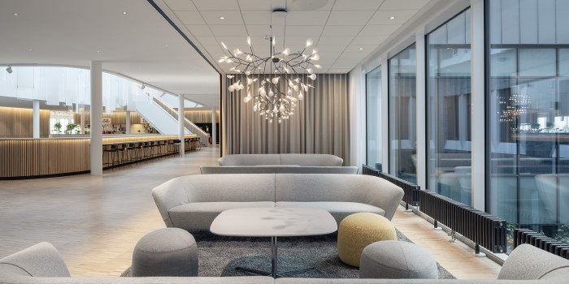

Var?
Konferensen hålls på vårt moderna kontor i centrala Göteborg, endast några minuters promenad från Centralstationen. Lokalerna erbjuder en inspirerande miljö med stora ljusa ytor, gott om plats för workshops och nätverkande samt en härlig utsikt över stadens puls.
När?
Den 15–17 oktober 2025 bjuder vi in till tre fullspäckade dagar med föreläsningar, praktiska sessioner och mingel. Dagarna är uppdelade i teman – inspiration, teknik och framtid – så att du får ut det mesta av din upplevelse.
Vad?
Bättre Webb 2025 är en kreativ mötesplats för utvecklare, designers och teknikentusiaster som brinner för webben. Under konferensen delar några av branschens mest erfarna talare med sig av sina insikter om modern HTML, CSS, JavaScript, UX och tillgänglighet. Vi fokuserar på hur vi tillsammans kan skapa snabbare, snyggare och mer användarvänliga webbupplevelser – för alla typer av användare.
Vi önskar er ett mycket varmt välkomnande till vår årliga konferens!
Oavsett om du är nybörjare, student eller erfaren utvecklare kommer du att hitta något inspirerande och lärorikt här. Vi tror på delad kunskap och gemenskap – två saker som gör webben bättre varje dag.
Vi ser fram emot att träffa dig i Göteborg och tillsammans skapa framtidens webb!
